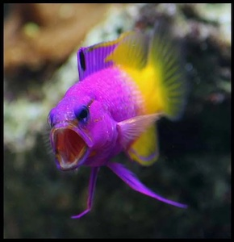
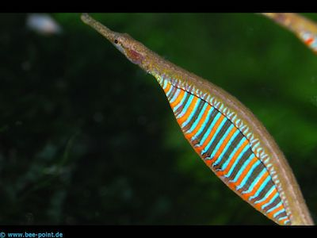
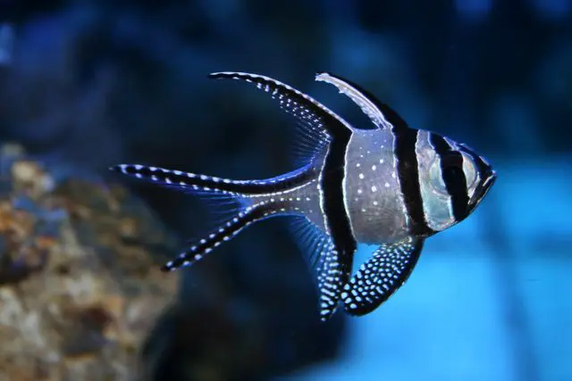

Martin's Harvest  Royal gramma 8 cm (3 inches) Rusty This fish is known as a planktivore, spending it's time eating zooplankton and crustations. It is also known as a cleaner fish and helps keep my tank clean. "I found this fish off of a remote island the locals know as "The Tiny Island" near the colorful coarl reefs off of the coast." -Martin Location Harvested: Bermuda Tank Tips Minimum Tank Size: 20-30 gallons Care or experience level: easy, appropriate for all levels of experience.  Pipefish 35–40 cm (14–15.5 in) Charlie This fish eats mostly tiny custaceans. "In the summer you can find the pipefish along the bay grassbeds locally." -Martin Location Harvested: Chesapeake Bay Watershed Tank Tips Minimum Tank Size: 30 gallons Care or experience level: difficult, appropriate for experienced harvester's only.  Banggai Cardinal 8 cm (3 inches) Lamar Jackson This fish enjoys copepods, but it also eats planktonic organisms. "Local's will tell you to look in the shallow, calm waters for this fish." -Martin Location Harvested: Archipelago, Indonesia Tank Tips Minimum Tank Size: 30+ gallons Care or experience level: easy, appropriate for all levels of experience.